In China Employee Termination in 2026: Myth vs Fact for Foreign Employers Who Need Clear Legal and Payroll Risk Signals
Key takeaways
- The biggest error foreign employers make is treating China termination as if it were an at-will system with optional legal review.
- In practice, route classification and evidence quality usually matter more than process speed.
- Myth-vs-fact analysis helps non-local teams separate confident legal signals from assumptions imported from other jurisdictions.
- Payroll execution is still critical, but it should be aligned to approved legal rationale, not used to justify it retroactively.
- A practical control model is legal-first, communication-consistent, payroll-aligned, and dispute-ready.
Start with legal context, not folklore
Many overseas teams inherit “market wisdom” about China employee termination from chat threads, old playbooks, or experience in different legal systems. Some of those heuristics are directionally useful. Many are not. The result is uneven decision quality: teams move quickly on assumptions that feel operationally efficient but are legally fragile when challenged.
A better approach is to rebuild the baseline from source hierarchy. The PRC Labor Contract Law provides the core framework for termination pathways and consequences. The State Council’s implementation regulation adds practical interpretation for application. The Supreme People’s Court labor dispute interpretation offers dispute-facing guidance relevant to evidence and adjudication context. The Social Insurance Law anchors statutory obligations that continue to matter during offboarding. China Briefing then helps translate these layers into practical language for foreign operators.
This article uses that structure to test common myths. The purpose is not to make every case simple. The purpose is to reduce preventable errors for foreign employers who need clarity without overconfidence.
How to use this myth-vs-fact guide
Each myth below reflects a pattern frequently seen in multinational operations. The “Fact” sections provide a plain-language correction grounded in the legal hierarchy and practical employer execution reality. Because city-level implementation can vary, facts are framed with confidence boundaries rather than absolute claims.
The practical rule: if your internal policy relies on a statement that sounds like a myth below, pause and re-validate your case route before execution.
Myth 1: “If business reasons are clear, termination is mostly a management call.”
Fact: In China, business rationale alone is not enough. Termination should be mapped to a legally supportable route and backed by evidence.
Foreign managers often equate organizational logic with legal sufficiency. In China, those are related but not identical. A business unit may have strong reasons to reorganize or replace a role, yet a specific employee case still requires route-valid handling and coherent records. If route selection is weak or unclear, managerial confidence does not protect the company from downstream dispute exposure. A practical governance response is to require route classification before manager-level commitments become employee-facing actions.
Myth 2: “The cheapest immediate payout is usually the lowest-risk option.”
Fact: Lower visible payout can still produce higher total risk-adjusted cost if route defensibility is weak.
This myth appears when teams optimize for quarter-end budgets. A route that appears cost-efficient at first glance may carry larger potential exposure if challenged. Even where expected direct compensation looks manageable, weak legal basis or inconsistent documentation can increase dispute risk and management distraction costs. Foreign employers should therefore evaluate cost in two layers: immediate cash outflow and risk-adjusted exposure under challenge scenarios.
Myth 3: “Documentation matters, but we can clean files after execution.”
Fact: Post-hoc reconstruction is often fragile. Evidence integrity should be built before release.
In disputes, timing and consistency matter. Records produced after the fact may be treated differently than contemporaneous materials, and contradictory versions can damage credibility. This is why evidence readiness should be a pre-release gate, not a cleanup task. For non-local teams, a useful control is an evidence map: each critical assertion in the case should point to a specific record, owner, and date.
Myth 4: “If we use an EOR or external vendor, termination risk is mostly transferred.”
Fact: Vendors can improve execution quality, but substantive legal risk does not disappear.
EOR and vendor models can strengthen process discipline, especially for communication logistics and payroll operations. However, route quality, fact integrity, and consistency obligations remain. If accountability boundaries are vague, outsourcing may even create new handoff risks. The practical control is explicit ownership mapping: who classifies route, who approves messaging, who codes payroll, and who owns final archive integrity.
Myth 5: “Contract expiry or non-renewal is always administrative and low risk.”
Fact: These cases can still carry legal and compensation consequences depending on facts.
Foreign teams sometimes treat contract-cycle events as automatic closures. In practice, treatment depends on legal conditions and case details. Over-automation can hide route assumptions that have not been validated. The right posture is to apply the same discipline used in other termination cases: classify route, review facts, align communication, and confirm payment/statutory handling consistency.
Myth 6: “If HR communication is empathetic, legal risk is naturally lower.”
Fact: Communication tone helps relationships, but legal consistency and evidentiary coherence are the primary controls.
Empathy is good practice and should be retained. But tone cannot compensate for inconsistent route rationale, contradictory records, or payroll-label mismatches. In real cases, risk usually increases when polished communication overlays unresolved legal ambiguity. A stronger model is “empathetic and coherent”: respectful messaging that also matches approved legal framing and documented facts.
Myth 7: “Payroll is a downstream processor, not a legal-risk actor.”
Fact: Payroll outputs are part of the risk record and should be treated as a control function.
Final payment labels, calculation categories, and offboarding treatment can become evidence artifacts. If payroll coding diverges from approved route logic, that inconsistency may weaken defensibility. Payroll therefore should have escalation authority when legal rationale and payment mapping conflict. For foreign operators, this is often a cultural shift: payroll moves from passive executor to governance participant.
Myth 8: “One successful case in one city is enough to standardize national policy.”
Fact: National legal framework is unified, but local implementation texture can differ.
A past success in one city does not guarantee the same handling outcomes everywhere. Foreign teams should use one national architecture with local-confirmation triggers for uncertain or high-impact cases. This is not over-caution; it is a practical hedge against interpretation variance.
Applied scenario A: performance case with fragmented records
A regional manager asks for quick termination due to recurring performance concerns. HR review finds uneven documentation: expectations changed mid-cycle and records are incomplete.
Myth-driven response would treat manager confidence as enough and move quickly. Fact-driven response recognizes this as a route-and-evidence risk case. The team pauses release, reconstructs facts, and decides whether route support can be strengthened or whether a different closure pathway is more defensible. Payroll does not finalize outputs until route signal is stable. This approach may appear slower in week one, but it often avoids larger disruption later.
Applied scenario B: restructuring case with global timeline pressure
Headquarters requests rapid execution across markets, including China. Local teams report mixed readiness and unresolved local-practice questions.
Myth-driven response applies one process intensity to all cases for speed. Fact-driven response applies tiered controls: high-confidence cases proceed with standard gates; ambiguous cases receive enhanced review and local confirmation before employee-facing action. This creates operational differentiation without abandoning governance.
Secondary operations layer: SOP by role (kept subordinate to legal context)
Legal
- Classify route and define confidence level.
- Identify mandatory evidence and unresolved ambiguity.
- Approve progression only when route support is coherent.
HR
- Coordinate chronology, records, and communication drafts.
- Maintain version control and gate status visibility.
- Own closure checklist and archive index completeness.
Manager
- Provide factual records without premature legal conclusions.
- Use approved communication boundaries.
- Escalate conflicts between business urgency and evidence readiness.
Payroll
- Wait for route confirmation before final component mapping.
- Align labels and calculations with approved rationale.
- Escalate mismatches before release.
Vendor/EOR
- Execute assigned tasks with traceable handoffs.
- Preserve records and confirm transfer obligations.
- Escalate ownership ambiguity immediately.
This SOP is deliberately concise so foreign teams can adopt it without rebuilding every internal process.
Document checklist for myth-resistant execution
- Route-classification memo with approval timestamp.
- Employment contract set and key amendments.
- Evidence map linking assertions to records.
- Manager records used in decision rationale.
- Legal review comments and unresolved issues log.
- Communication drafts and final approved versions.
- Payroll rationale sheet and output mapping.
- Statutory closure notes (including contribution treatment).
- Vendor/EOR handoff records where applicable.
- Archive index with accountable owner and storage path.
A checklist cannot guarantee outcomes, but it materially improves consistency and review readiness.
Exception handling when myths creep back into execution
Exception 1: “Business wants immediate release despite unresolved route questions”
Response: require formal risk acknowledgment and escalation; do not skip route gate by email consensus.
Exception 2: “Key evidence is missing but team suggests documenting later”
Response: block release and decide whether to recover evidence, change route, or adopt a more controlled closure approach.
Exception 3: “Payroll output labels differ from legal memo language”
Response: hold final payment release until alignment is documented.
Exception 4: “Local uncertainty remains but timeline pressure is high”
Response: record uncertainty and seek qualified local confirmation before irreversible steps.
Exception 5: “Vendor says they own this stage but internal team assumes otherwise”
Response: pause handoff, issue explicit ownership map, then proceed.
These controls make myth-driven shortcuts easier to detect before they become case liabilities.
System implementation notes for practical control
You do not need a full HRIS transformation to improve governance quality. Practical upgrades can be incremental:
- Make route classification a controlled field with approval state.
- Tie communication templates and payroll mapping rules to route state.
- Add pre-release validation checking legal, communication, and payroll consistency.
- Maintain lightweight version logs for key decisions and edits.
- Define archive ownership and retrieval responsibilities, including vendor-held files.
For multinational teams, these controls also help reporting. Instead of anecdotal updates, teams can provide governance metrics: route-confidence distribution, gate-completion rates, unresolved-local-question counts, and alignment exceptions detected pre-release.
Common mistakes and prevention
Mistake 1: relying on inherited myths from prior markets
Prevention: train managers and regional HR on China-specific route logic and confidence boundaries.
Mistake 2: treating legal review as late-stage sign-off
Prevention: require legal-route input at case entry and before employee-facing communication.
Mistake 3: optimizing monthly closure metrics at the expense of defensibility
Prevention: include consistency and dispute-readiness metrics in performance dashboards.
Mistake 4: separating payroll from governance discussion
Prevention: include payroll in mandatory pre-release gate.
Mistake 5: assuming one city’s experience is a national policy template
Prevention: keep local confirmation triggers for high-impact or uncertain cases.
What to do now
- Run a myth audit on your current termination policy language and manager FAQs.
- Replace myth-like statements with source-backed route and evidence rules.
- Implement a stop/go route gate before communication or payroll finalization.
- Add payroll/legal/HR alignment checks as a mandatory release condition.
- Create a short local-confirmation trigger list for uncertain case types.
- Define single-point archive accountability across internal and vendor teams.
- Review recent cases for inconsistency patterns and update controls.
- Re-train managers with plain-language myth-vs-fact examples.
This sequence helps foreign employers improve quickly without waiting for large policy rewrites.
What to watch next
Watch three areas over the next cycle. First, local handling trends in disputes may influence evidence expectations in practical ways. Second, economic and restructuring pressure may test whether legal-first controls hold under urgency. Third, multinational harmonization projects may unintentionally reintroduce non-China assumptions into templates. Regular myth-audits can prevent drift.
Source-fit reassessment for this run
This run intentionally uses a myth-vs-fact narrative while retaining the same high-confidence legal hierarchy as prior runs. That improves variation without reducing factual reliability. Official law and judicial interpretation provide the correction backbone; China Briefing supports foreign-reader practical interpretation. Lower-fit tax-first or broad comparative commentary was not prioritized because this format focuses on misconception correction in China termination governance.
FAQ
1) Why use a myth-vs-fact format for foreign clients?
Because it quickly corrects common cross-border assumptions that cause avoidable compliance errors.
2) Are all myths equally risky?
No. The highest-risk myths are those that bypass legal route validation and evidence readiness.
3) Does better documentation guarantee no dispute?
No, but it significantly improves consistency and defensibility if a dispute occurs.
4) Can payroll really influence legal risk outcomes?
Yes. Payroll outputs can reinforce or contradict legal rationale and communication records.
5) Is this guide a replacement for local counsel?
No. It is an informational governance aid and should be paired with qualified local advice.
6) Should foreign employers standardize one China-wide process anyway?
Standardize architecture, but preserve local escalation and confirmation triggers.
Disclaimer
This article is for informational purposes only and does not constitute legal, tax, accounting, or compliance advice. China employment outcomes depend on case facts and local implementation practice. Employers should seek qualified local professional advice before making specific decisions.
Sources
- National People’s Congress. Labor Contract Law of the People’s Republic of China (official English text; adopted 2007-06-29, amended 2012-12-28). http://www.npc.gov.cn/zgrdw/englishnpc/Law/2007-12/13/content_1384064.htm (accessed 2026-02-27).
- State Council. Regulations for the Implementation of the Labor Contract Law of the PRC (State Council Decree No. 535; official publication). https://www.gov.cn/gongbao/content/2008/content_1124615.htm (accessed 2026-02-27).
- Supreme People’s Court. Interpretation on Issues Concerning the Application of Law in the Trial of Labor Dispute Cases (I) (2020 amendment). https://www.court.gov.cn/fabu/xiangqing/243981.html (accessed 2026-02-27).
- National People’s Congress. Social Insurance Law of the People’s Republic of China (official English text; adopted 2010-10-28). http://www.npc.gov.cn/zgrdw/englishnpc/Law/2009-02/20/content_1471106.htm (accessed 2026-02-27).
- Dezan Shira & Associates (China Briefing). Employee Termination in China: A Guide for Employers (updated 2025). https://www.china-briefing.com/news/employee-termination-in-china/ (accessed 2026-02-27).
China-Payroll.com supports foreign employers with compliance-first EOR and payroll operations in China.
Need local employment support in China?
If you need a compliance-first partner for hiring, payroll, and risk controls in China, China-Payroll.com can help evaluate the right setup.
Image Prompt Pack
Create a 16:9 hero image for article title: 'In China Employee Termination in 2026: Myth vs Fact for Foreign Employers Who Need Clear Legal and Payroll Risk Signals'. Scene: global operations team evaluating workforce model options for China market entry. Incl…